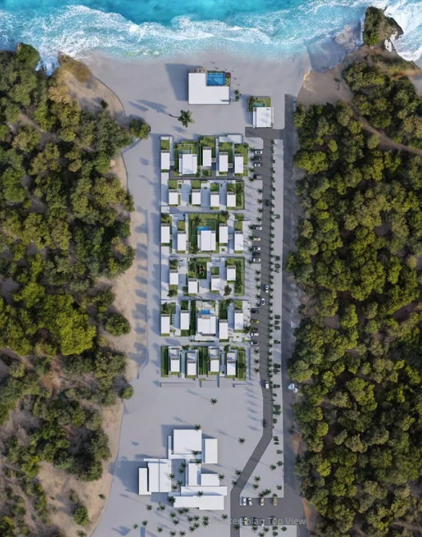
الضيافة
منتجع لاثرون
يقع منتجع لاثرون في البلدة الساحلية الخلابة لاثرون في ليبيا، وهو ملاذ من الهدوء والرفاهية، صُمم مع التركيز على العزلة والجمال الطبيعي.

الضيافة
يقع منتجع لاثرون في البلدة الساحلية الخلابة لاثرون في ليبيا، وهو ملاذ من الهدوء والرفاهية، صُمم مع التركيز على العزلة والجمال الطبيعي.
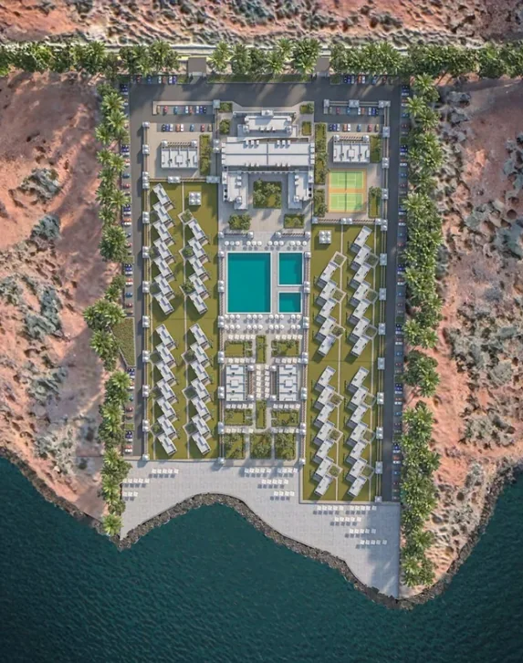
2021 · الضيافة
يقع على الساحل الشرقي للجبل الأخضر، ويوفر هدوءاً لا مثيل له وجمالاً طبيعياً خلاباً. يتميز بإطلالاته البانورامية على البحر وموقعه المنعزل الذي يجمع بين الرفاهية والانسجام مع الطبيعة.
.webp)
متعدد الاستخدامات
تُطل أبراج إندير على البحر الأبيض المتوسط، وتضم ثلاثة أبراج تشمل فندقاً فاخراً، ومركزاً تجارياً نابضاً بالحياة، ومبنى مكاتب حديثاً. دمج ثلاث وظائف مميزة في مجمّع واحد هو السمة المميزة للمشروع.
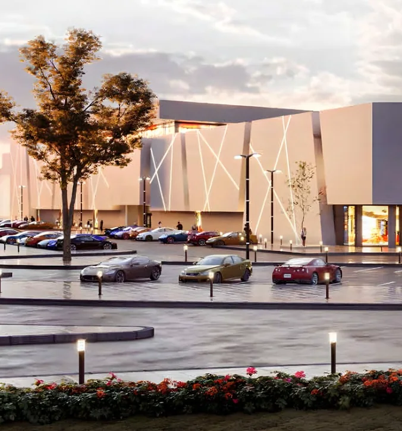
تجاري
يقع مشروع مول وهوتيل الأهلي في مدينة بنغازي النابضة بالحياة، ويمثل معلماً للهدوء العصري على مساحة 40,000 متر مربع.
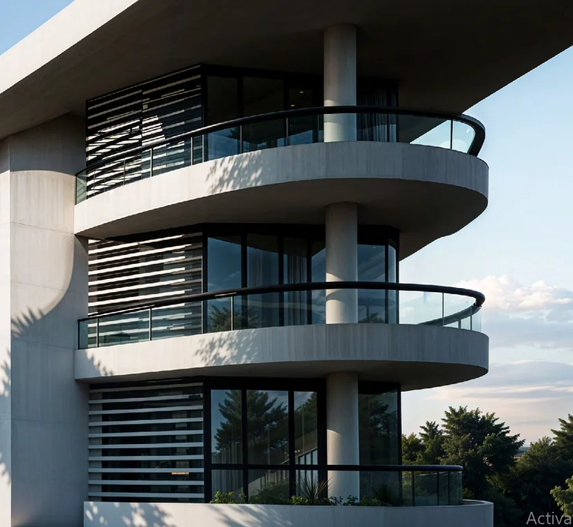
تجاري
يقع في قلب طرابلس، وهو مشروع معماري مميز يجسّد هوية علامة بي إم دبليو العريقة — مزيج من الفخامة والوظائف، بواجهة زرقاء دائرية مستوحاة من شعار الشركة.
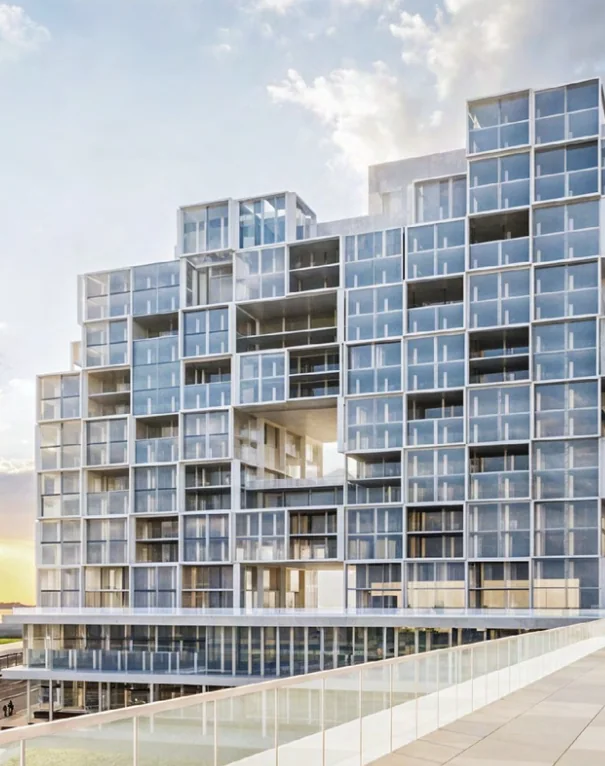
سكني
مجمع سكني صُمم لتحقيق أقصى استفادة من إطلالات البحر الأبيض المتوسط مع ضمان التهوية الطبيعية لجميع الوحدات. يحصل كل شقة على إطلالة غير محجوبة على المناظر الرئيسية.
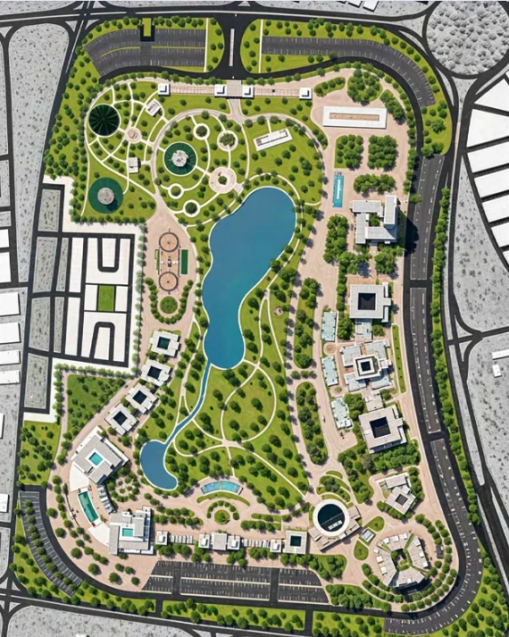
2021 · التخطيط العمراني
تقع في قلب المدينة، وتُعدّ واحة خضراء تمتد على مساحة 40 هكتاراً — أكبر حديقة عامة في بنغازي، وتعمل كمركز ترفيهي رئيسي للمجتمع.
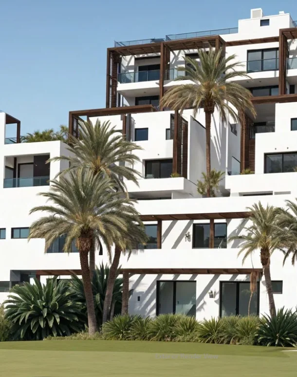
الضيافة
يقع على شاطئ خلاب، ويوفر ملاذاً حصرياً مع إمكانية الوصول الخاص إلى الشاطئ — وجهة متكاملة الخدمات تشمل الإقامة والمطاعم والرياضة والترفيه والتسوق.
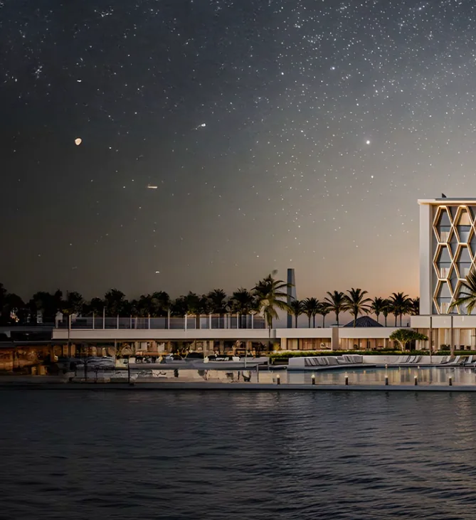
الضيافة
يقع فندق أوزو في موقع خلاب في بنغازي، ليبيا، ويُطل على بحيرة 23 يوليو.
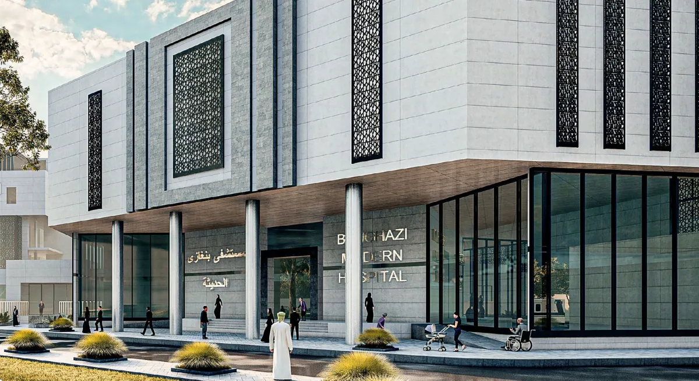
الرعاية الصحية
يمثل مستشفى بنغازي حجر الزاوية للرعاية الصحية في المدينة، وقد صُمم مع التركيز على الوظائف وسهولة وصول المرضى. يتميز تصميمه الاستراتيجي الذي يبسّط الحركة الداخلية ويعزز كفاءة الخدمات الطبية.
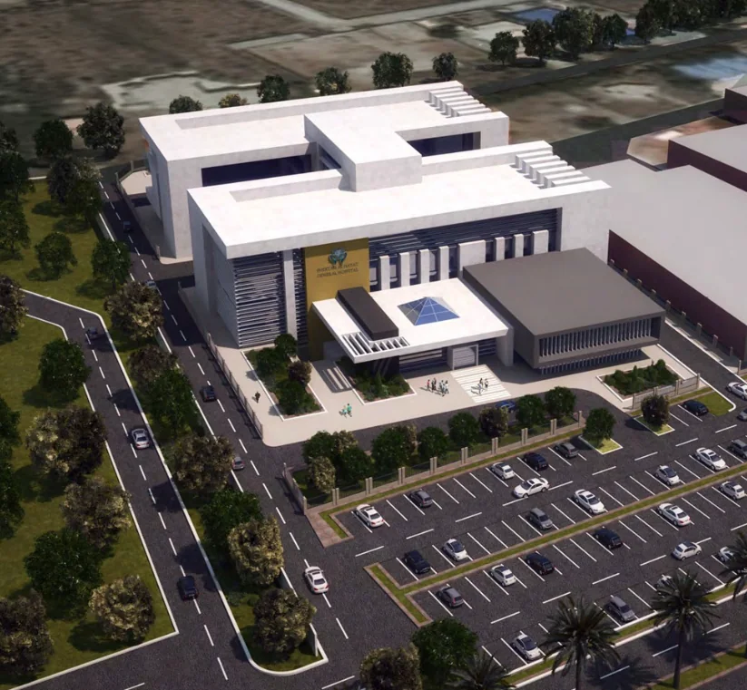
الرعاية الصحية
يمثل مستشفى شريان الحياة معلماً في الهندسة المعمارية الصحية الحديثة، وقد صُمم بعناية لتلبية أعلى معايير الرعاية الطبية وراحة المرضى.
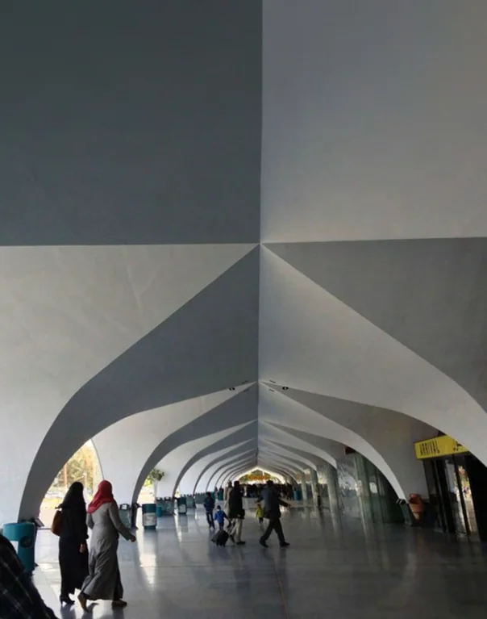
الطيران
ركّز نهجنا لتطوير مطار طرابلس على الوظائف والسلامة وتحسين حركة المسافرين — مع تحديث المرافق لاستيعاب الحجم المتزايد للرحلات الدولية والمحلية.
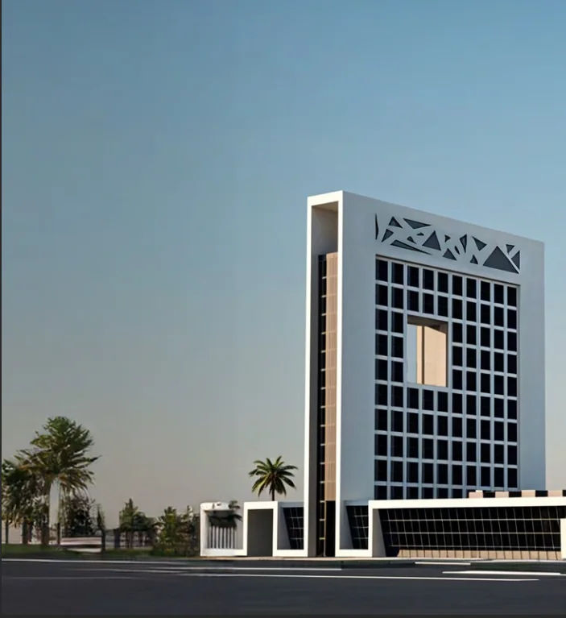
2004 · مدني
انطلق عام 2004، ويُعدّ مركز مؤتمرات بنغازي مشروعاً معمارياً محورياً للمدينة، يجسّد الابتكار والرؤية — خروجاً عن الأنماط التقليدية ورمزاً لطموحات بنغازي.
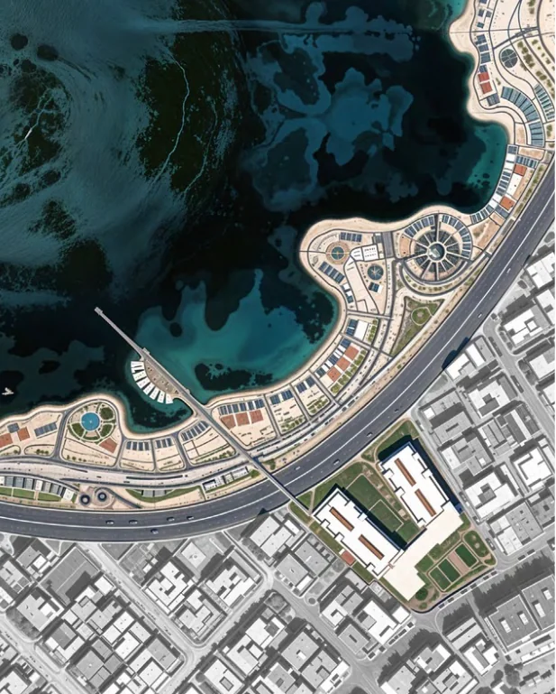
الضيافة
يقع في منطقة قرقارش النابضة في طرابلس، ويمتد على أكثر من 55,000 متر مربع مع واجهة بحرية مباشرة بطول 44,166 متر مربع على البحر الأبيض المتوسط — حيث تلتقي حيوية المدينة بطبيعة الشاطئ الهادئة.
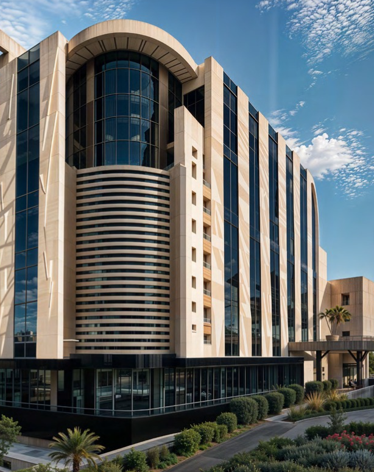
الضيافة
يقع في قلب بنغازي النابض، ويُعدّ فندق بيرنيس حجر الأساس للضيافة في منطقة الأعمال بالمدينة. يوفر وصولاً استثنائياً إلى أهم أماكن الأعمال والتسوق والترفيه — خيار مثالي لرجال الأعمال والسياح على حد سواء.
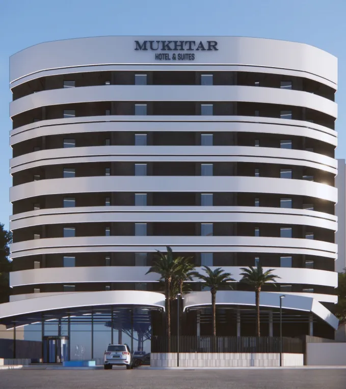
الضيافة
إعادة تصميم للمبنى القائم لتحويله إلى فندق عصري متكامل الخدمات — من خلال إعادة توزيع الفراغات الداخلية، وتحديث الواجهات المعمارية، وتحسين الحركة الوظيفية، إلى جانب تعزيز جودة التجربة الفندقية للنزلاء.
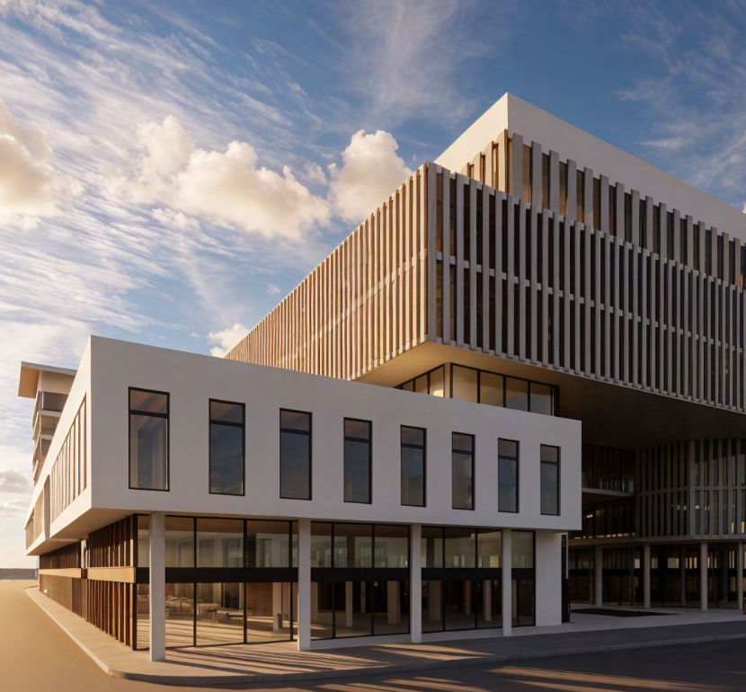
متعدد الاستخدامات
وجهة مميزة في مدينة بنغازي، تجمع بين الرفاهية والراحة والحداثة. يضم المجمع فندقاً راقياً، ومنطقة تجارية ديناميكية بمتاجر وبوتيكات متنوعة، ومساحات مكتبية وإدارية. وتحته مواقف سيارات تحت الأرض واسعة تسهّل الوصول للزوار والموظفين.
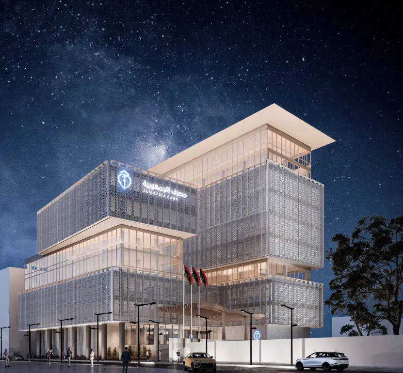
تجاري
مقر مصرفي مقترح في طرابلس — مسعى معماري طموح يهدف إلى إعادة تعريف المشهد العمراني. منارة للتصميم الإسلامي المعاصر، يتجاوز المبنى الأنماط المصرفية التقليدية ليؤسس نفسه معلماً في سياقه. تغلّف الواجهات شاشات إسلامية الطابع، ليست عناصر تزيينية فحسب، بل دروعاً وظيفية ضد وهج الشمس لضمان الراحة الداخلية المثلى.
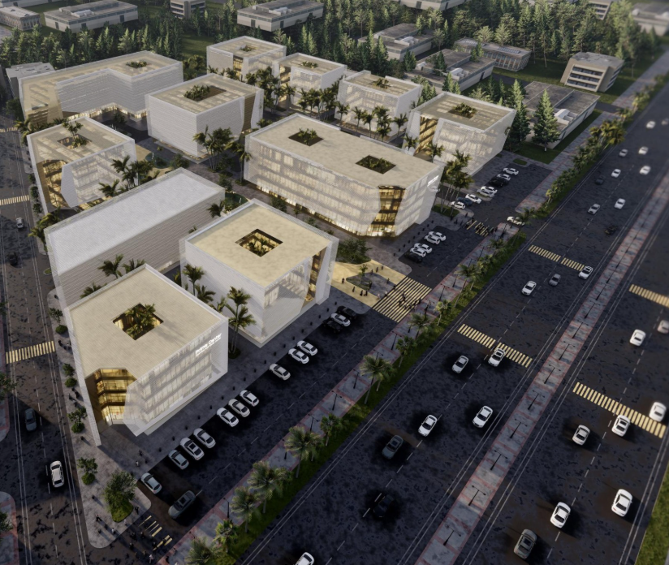
متعدد الاستخدامات
يقع في منطقة القوارشة في بنغازي، على موقع ذي قيمة استراتيجية من حيث الحجم وإمكانات التطوير. يحدد المخطط الشامل حدود الموقع، والمنطقة المخصصة للتطوير الكامل للمشروع، والقطعة الأصغر المملوكة للعميل ضمن الإطار العام — مما يوفر مرونة في تخطيط التطوير.
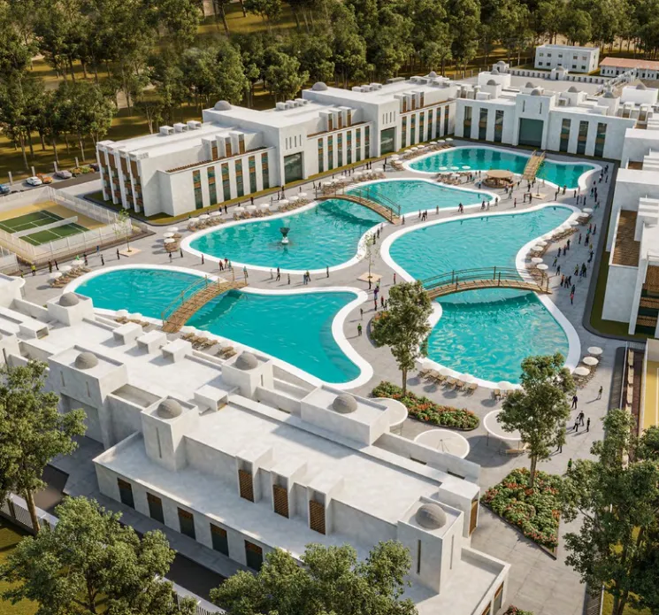
الضيافة
في قلب منتجع سوسة يكمن التزام بدمج التصميم المعاصر مع محيطه الطبيعي الخلاب. صُممت كل وحدة شاليه بعناية بتخطيط مدروس، تدمج بسلاسة وسائل الراحة الحديثة مع الأجواء الهادئة للمنتجع.
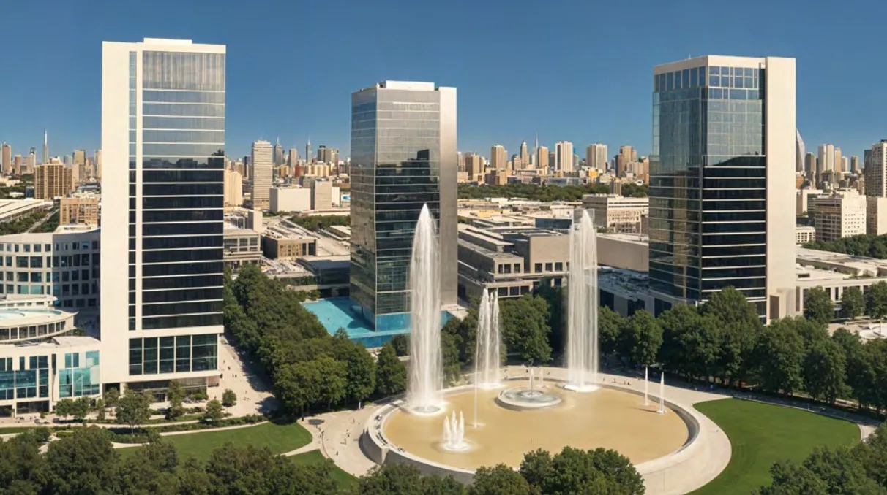
مدني
صُمم المشروع حول التخطيط العمراني الفريد لبنغازي — عدة محاور شعاعية تتقارب بالقرب من الموقع — مما ألهم الفكرة المركزية: معلم حضري ديناميكي يعمل كنصب تذكاري ومساحة مجتمعية محورية في محيط أخضر غني. يربط محور للمشاة بين الطرفين الشمالي والجنوبي للموقع، ليجمع بين عناصر عمرانية متنوعة: مسجد كبير، ومسرح مفتوح، ومساحات ترفيهية متعددة.
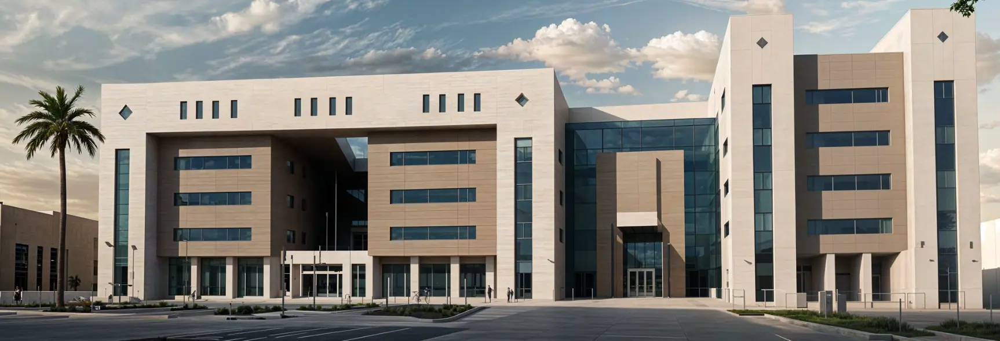
تجاري
مجمّع مؤسسي حديث في طرابلس، يتكون من مبنيين متميزين: مبنى إداري رئيسي يضم مكاتب حديثة، ومبنى ثانوي يضم مقصفاً كبيراً ومرافق متنوعة للموظفين. صُمم المبنيان لتعزيز الإنتاجية ورفاهية الموظفين، ويشملان عناصر معمارية معاصرة وممارسات مستدامة.
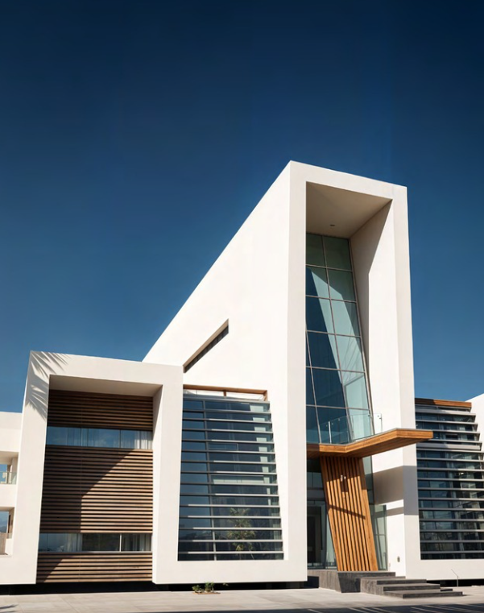
تجاري
مشروع معماري رائد يهدف إلى إحداث ثورة في بيئة العمل المكتبية الحديثة. صُمم لخلق الأجواء المثالية للعمل — بمزج الوظائف مع الجماليات لتعزيز الإنتاجية ورفاهية الموظفين. الاستخدام المكثف للإضاءة الطبيعية عبر النوافذ الكبيرة يخلق بيئة داخلية مشرقة وجاذبة.
.webp)
الطيران
رؤية تصميمية تهدف إلى إنشاء بوابة حديثة إلى ليبيا — تعكس ثراءها الثقافي وأهميتها الاستراتيجية. يدمج التصور المعماري بين التصميم المعاصر والعناصر الليبية التقليدية، لضمان أجواء ترحيبية للمسافرين مع تجسيد طموحات البلاد على الساحة الدولية.
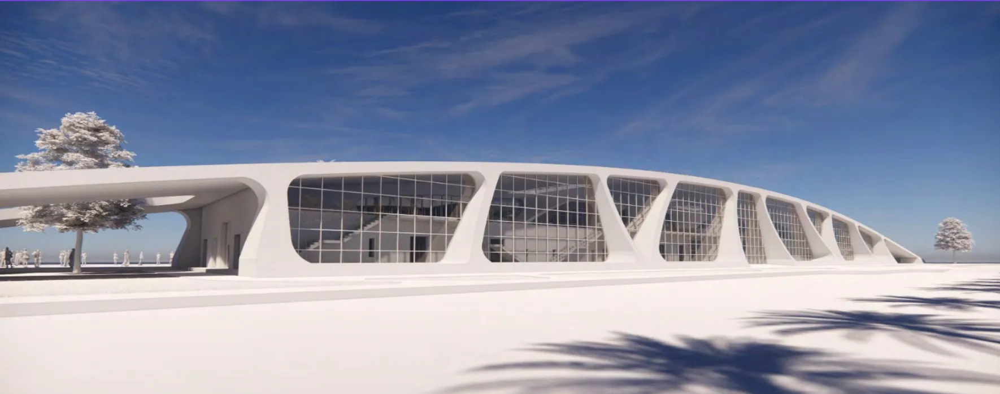
النقل
شهادة على التزام الشركة بالتميّز في البنية التحتية للنقل. بتكليف بإعداد المخططات التنفيذية التفصيلية والتخطيط الشامل، صُمم كل عنصر بعناية لضمان الوظائف والسلامة والتناغم الجمالي — مما يعكس البراعة التقنية والالتزام بتعزيز التواصل والنمو الاقتصادي في ليبيا.
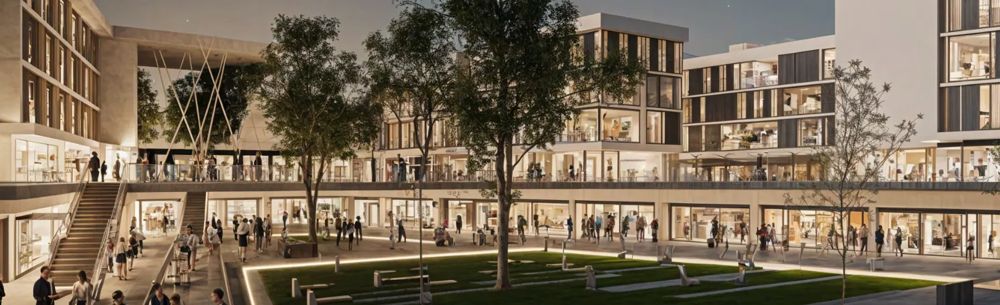
تجاري
مجمع تجاري صُمم ليكون نقطة محورية للمنطقة المحيطة — بيان معماري حديث ومجرد يمزج الشكل والوظيفة ويتكامل مع المشهد. يجمع المجمع مجموعة متنوعة من الوظائف في تطوير واحد، مما يخلق وجهة وليس مجرد مبنى.
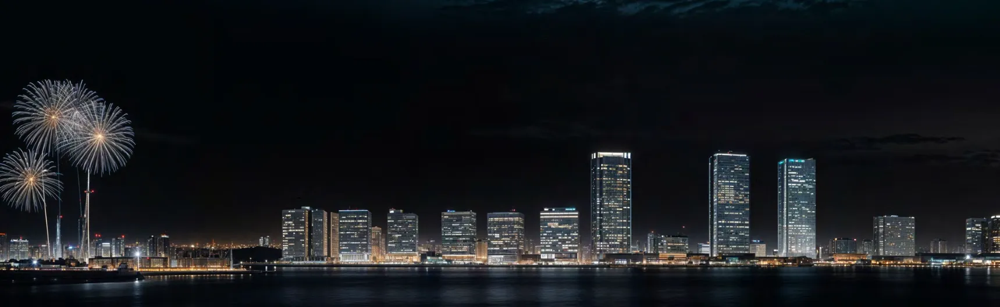
متعدد الاستخدامات
تطوير واجهة بحرية يطمح إلى إضافة قطعة نابضة وغنية وحديثة إلى مدينة بنغازي. الإرث الطويل للنادي، إلى جانب الموقع الاستراتيجي، يشكّلان الرؤية الكامنة خلف هذا المشروع الحيوي.
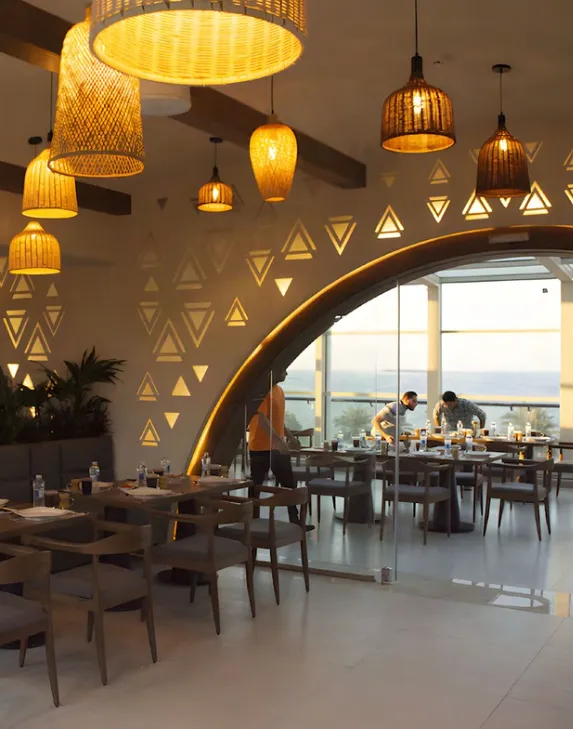
الضيافة · مصر
تصميم داخلي يجسد جوهر التراث والثقافة النوبية. ألوان زاهية ونقوش معقدة وزخارف تقليدية تخلق تجربة طعام غامرة، بينما تعكس المفروشات المصنوعة يدوياً والمواد الأصيلة الحرفية النوبية.
بالتعاون مع Form the Studio، القاهرة.
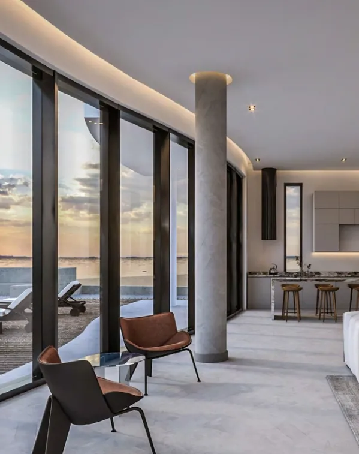
سكني · مصر
بيت شاطئي خاص صُمم لتحقيق أقصى استفادة من ضوء النهار والإطلالات المفتوحة. تعكس النوافذ الكبيرة الضوء المتغير عبر المساحات الداخلية، مما يخلق علاقة مستمرة بين الداخل والبحر. يمنح التخطيط المفتوح المنزل إحساساً بالرحابة في جميع أنحائه.
بالتعاون مع Form the Studio، القاهرة.
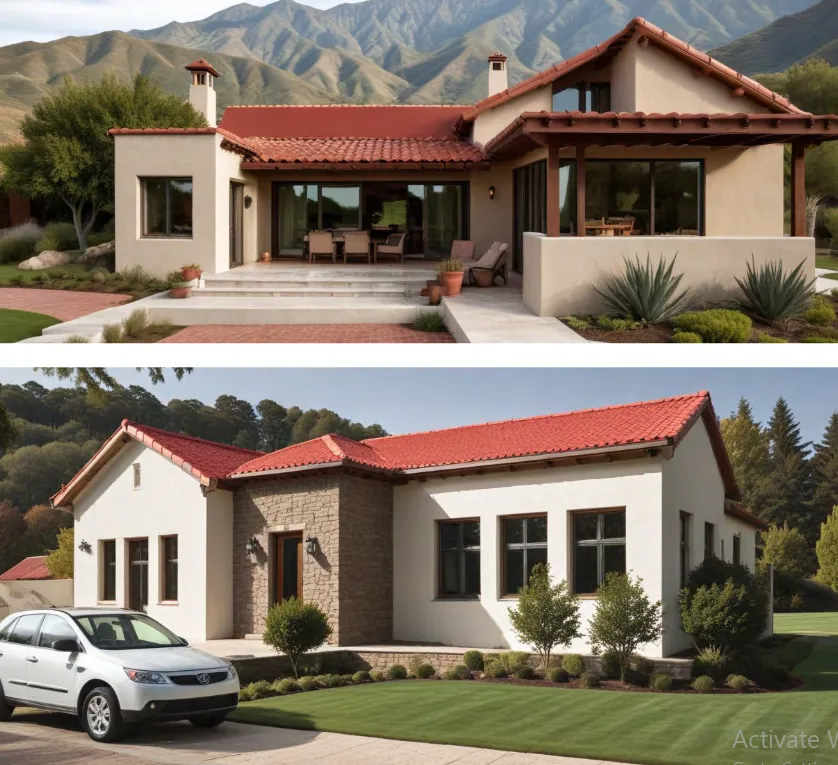
الضيافة
ملاذ يقع في مشهد رأس الهلال، يُطل على البحر. صُمم بأناقة وراحة في الاعتبار، كل شاليه هو ملاذ خاص — يوفر للضيوف مزيجاً مثالياً من الخصوصية والرفاهية. سواء كان البحث عن استراحة هادئة أو مكان هادئ للاستمتاع بالطبيعة المحيطة، تقدم شاليهات رأس الهلال تجربة لا تُنسى في بيئة هادئة ونقية.
الأرشيف
أعمال إضافية من أرشيفنا — قرى سكنية، ومخططات عمرانية، ومشاريع نقل، ومنشآت دينية، وفندقية، وإدارية، وصحية. تمتد عبر أكثر من ستة عقود من الممارسة.